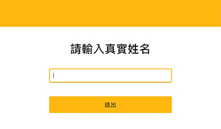
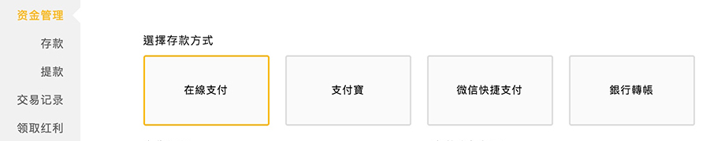
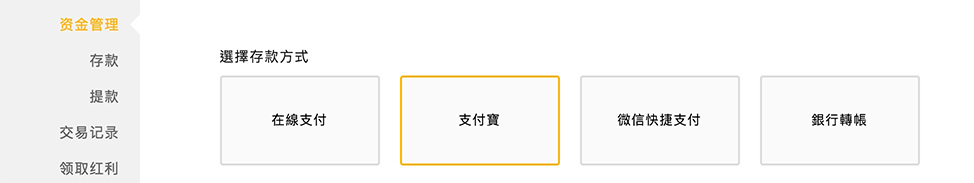
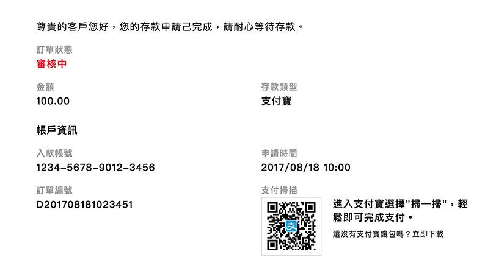
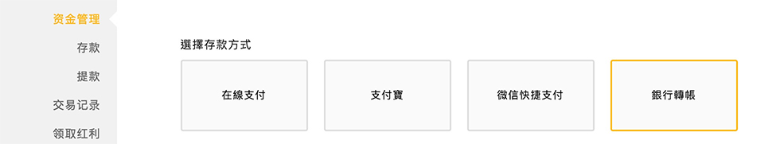

存款流程
如何存款
- 登入系統後，點擊首頁右上方的「存款」按鈕，進行存款步驟。

- 首次存款請輸入您的真實姓名，姓名需與您的銀行一致。
 - 進行存款操作，為用戶提供網銀轉帳、在線支付、微信支付與支付寶等相對應存款方式。

在線支付
- 進入會員中心後，右側可選擇「存款」按鈕並選擇「在線支付」選項。
 - 首次存款請先選擇您要匯入的銀行名稱與存款金額，並點擊提交。

- 頁面會跳轉到您所選擇的銀行進行操作。
- 當您依各銀行提示完成操作完成後，即完成存款申請，請靜待審合完成。

支付寶
- 進入會員中心後，右側可選擇「存款」按鈕並選擇「支付寶」選項。
 - 選擇您要轉帳金額後點擊「刷碼付款」進行下一步。

- 進行支付寶掃一掃完成支付
- 需正確填寫對帳資訊，以便查帳人員快速作業。

- 提交對帳資料完後即完成存款申請，請靜待審合完成。

網銀轉帳
- 進入會員中心後，右側可選擇「存款」按鈕並選擇「網銀轉帳」選項。
 - 選擇網銀所在銀行並填入「開戶銀行所在城市」及「轉帳金額」。

- 填寫「對帳資訊」完成後點擊「提交對帳資料」。

- 依照網上所提示之轉帳資料進行轉帳，轉帳完成後即完成存款申請，請靜待審合完成。